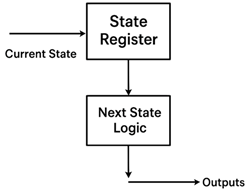
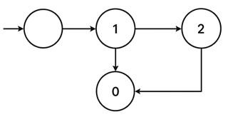
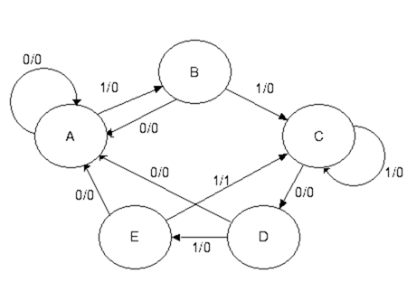
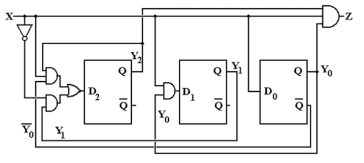
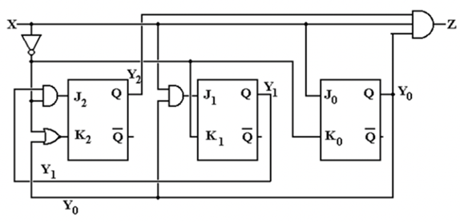
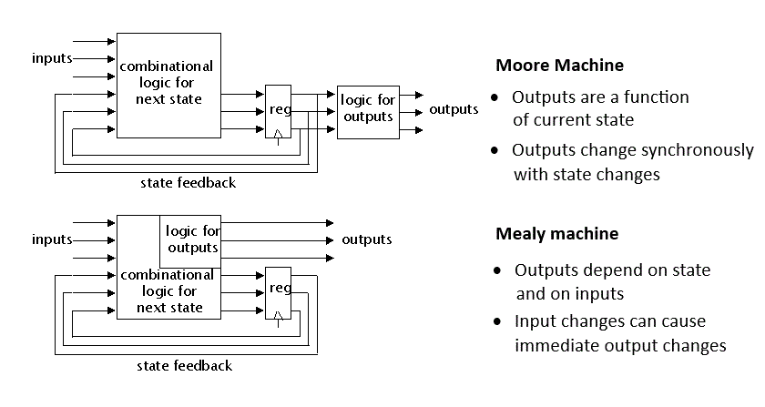

State Diagrams
Finite State Machines and Sequential Circuits

There are many applications where there is a need for our circuits to have "memory"; to remember previous inputs and calculate their outputs according to them. A circuit whose output depends not only on the present input but also on the history of the input is called a sequential circuit. In this section, we will learn how to design and build such sequential circuits using finite state machines (FSMs).
Understanding Sequential vs. Combinational Circuits
Combinational Circuits: Output depends only on current inputs Sequential Circuits: Output depends on current inputs AND previous states (memory)
A finite state machine is a mathematical model used to design sequential circuits. As shown in Figure 1, an FSM consists of:
- State Register: Stores the current state using flip-flops
- Next State Logic: Combinational circuit that determines the next state
- Output Logic: Combinational circuit that generates outputs
State Diagram Fundamentals

A state diagram is a graphical representation that describes the behavior of a finite state machine. As illustrated in Figure 2, every component of a state diagram has a specific meaning:
State Diagram Components
States (Circles): Each circle represents a unique condition or state of the machine
- Upper half: Contains the state name or description
- Lower half: Contains the output value for that state
Transitions (Arrows): Each arrow represents a possible change from one state to another
- Arrow label: Shows the input condition that causes the transition
- Transition timing: Occurs on each clock cycle based on current input
Initial State: Usually marked with an arrow pointing to it from nowhere, representing the starting condition
Design of 11011 Sequence Detector Using JK Flip-Flops (With Overlap)
Step 1 – Derive the State Diagram and State Table
Step 1a – Determine the Number of States
For a sequence detector detecting an N-bit sequence, at least N states are required.
We are designing a 5-bit sequence detector (11011), therefore the number of states required is 5.
Label the states as A, B, C, D, and E.
A is the initial state.
Step 1b – Characterize Each State
| State | Has | Awaiting |
|---|---|---|
| A | — | 11011 |
| B | 1 | 1011 |
| C | 11 | 011 |
| D | 110 | 11 |
| E | 1101 | 1 |
Step 1c – Transitions for Expected Sequence
Transitions are labeled as X / Z, where:
- X = Input
- Z = Output
For the expected input sequence:
- A → B on 1 / 0
- B → C on 1 / 0
- C → D on 0 / 0
- D → E on 1 / 0
- E → C on 1 / 1 (sequence detected, overlapping allowed)

Step 1d – Inputs That Break the Sequence
| State | On Input 0 | On Input 1 | Comment |
|---|---|---|---|
| A | Stay in A | Go to B | Waiting on 1 |
| B | Go to A | Go to C | "10" not part of sequence |
| C | Go to D | Stay in C | Overlap due to “11” |
| D | Go to A | Go to E | "1100" restarts sequence |
| E | Go to A | Go to C | "11011" detected, overlap at "11" |
Step 1e – Generate State Table with Output
| Present State | Input X | Next State | Output Z |
|---|---|---|---|
| A | 0 | A | 0 |
| A | 1 | B | 0 |
| B | 0 | A | 0 |
| B | 1 | C | 0 |
| C | 0 | D | 0 |
| C | 1 | C | 0 |
| D | 0 | A | 0 |
| D | 1 | E | 0 |
| E | 0 | A | 0 |
| E | 1 | C | 1 |
Step 2 – Determine Number of Flip-Flops
We have 5 states (N = 5).
To determine the number of flip-flops:
2^(P-1) < 5 ≤ 2^P → P = 3
Therefore, three flip-flops are required.
Step 3 – Assign State Codes
Optimized state assignments:
| State | Binary Code (Y₂ Y₁ Y₀) |
|---|---|
| A | 000 |
| B | 001 |
| C | 011 |
| D | 100 |
| E | 101 |
Step 4 – Transition Table with Output
| Y₂Y₁Y₀ (PS) | X | Next State (Y₂'Y₁'Y₀') | Z |
|---|---|---|---|
| 000 (A) | 0 | 000 | 0 |
| 000 | 1 | 001 | 0 |
| 001 (B) | 0 | 000 | 0 |
| 001 | 1 | 011 | 0 |
| 011 (C) | 0 | 100 | 0 |
| 011 | 1 | 011 | 0 |
| 100 (D) | 0 | 000 | 0 |
| 100 | 1 | 101 | 0 |
| 101 (E) | 0 | 000 | 0 |
| 101 | 1 | 011 | 1 |
Step 4a – Output Equation
The output Z = 1 only when:
Present State = 101 (Y₂=1, Y₁=0, Y₀=1) and Input X = 1
Therefore,
Z = X · Y₂ · Y₁' · Y₀
Step 5 – Separate Transition Tables (per Flip-Flop)
From D flip-flop behavior, the next-state equations are:
D₂ = X’·Y₁ + X·Y₂·Y₀’
D₁ = X·Y₀
D₀ = X
Step 6 – Use JK Flip-Flops
The design specifies JK flip-flops, so D equations are converted into JK excitation forms.
Step 7 – JK Excitation Table
| Q(T) | Q(T+1) | J | K |
|---|---|---|---|
| 0 | 0 | 0 | d |
| 0 | 1 | 1 | d |
| 1 | 0 | d | 1 |
| 1 | 1 | d | 0 |
Step 8 – Derive Input Equations
Flip-Flop Y₂
- For X = 0 → J₂ = Y₁, K₂ = 1
- For X = 1 → J₂ = 0, K₂ = Y₀
Combined equations:
J₂ = X’·Y₁
K₂ = X’ + Y₀
Flip-Flop Y₁
- For X = 0 → J₁ = 0, K₁ = 1
- For X = 1 → J₁ = Y₀, K₁ = 0
Combined equations:
J₁ = X·Y₀
K₁ = X’
Flip-Flop Y₀
- For X = 0 → J₀ = 0, K₀ = 1
- For X = 1 → J₀ = 1, K₀ = 0
Combined equations:
J₀ = X
K₀ = X’
Step 9 – Final Equations Summary
| Parameter | Equation |
|---|---|
| Z | Z = X·Y₂·Y₁'·Y₀ |
| J₂ | J₂ = X'·Y₁ |
| K₂ | K₂ = X' + Y₀ |
| J₁ | J₁ = X·Y₀ |
| K₁ | K₁ = X' |
| J₀ | J₀ = X |
| K₀ | K₀ = X' |
Step 10 – Circuit Representation
The circuit shown above represents the Finite State Machine (FSM) implementation using three JK flip-flops, designed according to the state and output equations derived previously. For practical implementation, logic gates corresponding to each equation are connected to drive the J and K inputs of the flip-flops, and the output Z is derived from the condition Z = X·Y₂·Y₁'·Y₀.

Equivalent D Flip-Flop Implementation
If implemented using D flip-flops, the equivalent next-state equations are:
D₂ = X'·Y₁ + X·Y₂·Y₀'
D₁ = X·Y₀
D₀ = X

Types of Finite State Machines

Moore State Machine
In a Moore machine (Figure 12a), the output depends only on the current state:
Output = f(Present State)
Characteristics:
- Outputs are stable and change only on state transitions
- Generally requires more states for complex problems
- Outputs are synchronized with the clock
- Less susceptible to input noise
Mealy State Machine
In a Mealy machine (Figure 12b), the output depends on both current state and current inputs:
Output = f(Present State, Inputs)
Characteristics:
- Outputs can change immediately when inputs change
- Generally requires fewer states than Moore machines
- Faster response to input changes
- May produce glitches if inputs change between clock edges
Applications of Finite State Machines
FSMs are fundamental building blocks in digital systems:
Control Units
- Processor control: Instruction fetch, decode, execute cycles
- Memory controllers: DRAM refresh, cache management
- Communication protocols: Handshaking, error detection
Sequential Detectors
- Pattern recognition: Detecting specific bit sequences
- Security systems: Password verification, access control
- Communication: Frame synchronization, protocol parsing
Counters and Timers
- Digital clocks: Time keeping, alarm systems
- Traffic controllers: Light sequencing, timing control
- Industrial automation: Process control, machinery operation
The systematic design procedure we've covered provides a reliable method for implementing any sequential logic function using finite state machines, making them indispensable tools in digital system design.